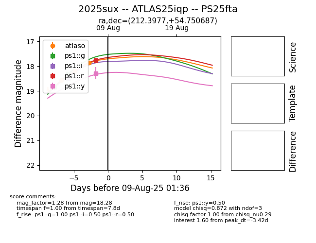

Target 2025sux at 2025-08-06 12:17, see:
TNS: wis-tns.org/object/2025sux
YSE: ziggy.ucolick.org/yse/transient_detail/2025sux
alt names
2025sux (yse,tns)
ATLAS25iqp (atlas)
PS25fta (panstarrs)
coordinates:
equatorial (ra, dec) = (212.3977,+54.75069)
galactic (l, b) = (100.9763,+58.91983)
photometry
last atlaso=18.57, ps1::g=18.31, ps1::i=18.48
1 atlaso, 2 ps1::g, 1 ps1::i detections
